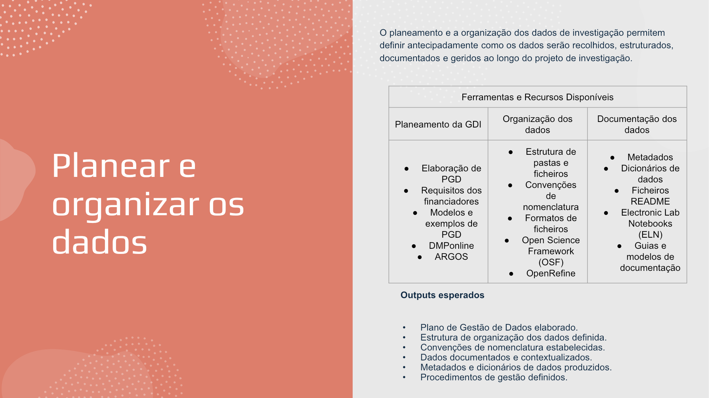

Slide 8 — Planear e organizar os dados
Pré-visualização

Ver imagem em tamanho completo

Conteúdo do slide
- Planear e organizar os dados
- Outputs esperados
- Plano de Gestão de Dados elaborado.
- Estrutura de organização dos dados definida.
- Convenções de nomenclatura estabelecidas.
- Dados documentados e contextualizados.
- Metadados e dicionários de dados produzidos.
- Procedimentos de gestão definidos.
- O planeamento e a organização dos dados de investigação permitem definir antecipadamente como os dados serão recolhidos, estruturados, documentados e geridos ao longo do projeto de investigação.
- Ferramentas e Recursos Disponíveis
- Planeamento da GDI
- Organização dos dados
- Documentação dos dados
- Elaboração de PGD
- Requisitos dos financiadores
- Modelos e exemplos de PGD
- DMPonline
- ARGOS
- Estrutura de pastas e ficheiros
- Convenções de nomenclatura
- Formatos de ficheiros
- Open Science Framework (OSF)
- OpenRefine
- Metadados
- Dicionários de dados
- Ficheiros README
- Electronic Lab Notebooks (ELN)
- Guias e modelos de documentação
No site
Ficheiros e proveniência
Descarregar PPTX · Descarregar PDF · Integração das fontes
O texto acima é extraído da apresentação; as verificações e explicações temáticas constam das páginas relacionadas.